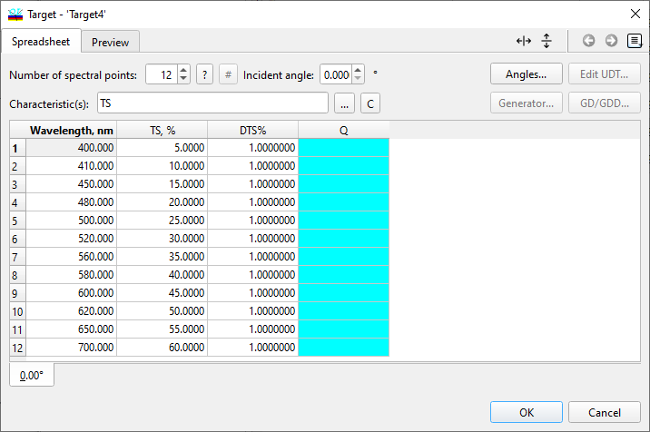
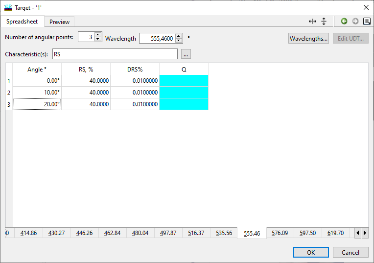

Target Editor
- Number of Spectral Points Estimation
- Target Interpolation
- Target Qualifiers
- Spectral Characteristics Abbreviations
- Target Selection
- Floating Constant Targets
- User-Defined Target Editor
- Extended Argument Definition
- Angles of Incidence
- Target Wavelengths
- Target Generator
- Phase/GD/GDD Target Generator
- Target Peak List
Target Editor
Navigation: OptiLayer Menu Commands > Data Menu > Target Editor |
` <c onfigure_database_columns.html>`__ ` <idh_menu_data.html>`__ ` < numberofspectralpointsest.html>`__ |
The Target window is used for entering and editing target data. It has two parts: the upper part is for setting key parameters related to the target data, and the lower part is a spreadsheet for displaying and entering the target data. The upper part of the window, under the Spreadsheet tab, contains information fields where users can specify the number of spectral points for entering target data, the incidence angles at which data will be entered, and the type of spectral characteristics for which data will be supplied.
|
Before using the Target Editor, it is useful to review the expression for the Target function used in OptiLayer. This information can be found in the / Refinement and Synthesis Tools section. |
The Preview, GD & GDD Preview, and UDT Preview tabs allow users to preview entered targets. Note that the last two tabs will only appear when corresponding targets are specified. If you are in / Spectral mode, the Target editing dialog will appear as follows:

To estimate the required number of spectral points, click on the button “?” next to the corresponding entry field to invoke the / Number of Spectral Points Estimation dialog.
The button # can be used to open the Target Interpolation dialog, which is useful for adjusting the number of spectral points in targets, particularly for targets with complex structures. In Spectral mode, a target function file can contain multiple data pages, with each page corresponding to a different angle of incidence. The currently displayed page is determined by the value in the Incident angle field. You can switch between different pages (angles of incidence) by selecting the necessary angles at the bottom of the spreadsheet. Each page of a target function file can be modified independently by using different sets of spectral characteristics and/or wavelengths for different angles of incidence. To add or remove target function pages, click on the Angles… button (see / Modifying Angles for more details).
Specify the number of wavelengths at which you want to set targets in the Number of Spectral Points field. Clicking on the Edit UDT… button opens a dialog where you can specify the definition of a / User-Defined Target/ .
The Generator… button opens a specialized / Target Generator dialog for specifying complex targets consisting of multiple pages and several bands on each target page.
Clicking on the GD/GDD… button opens the / Phase/GD/GDD Target Generator dialog, allowing you to create Phase/GD/GDD wavelength dependencies using terms familiar to specialists in ultra-fast optics.
Characteristics
You can specify characteristics to be matched in the design process by entering their abbreviations in the Characteristic(s) field. The list of available characteristics can be obtained by pressing the button to the right of the Characteristic(s) field, as indicated in the Target Selection/ / interface. The / abbreviations for the characteristics include:
Reflectance: RS, RP, and RA (for S-, P-, and Average polarizations),
Back Reflectance: BRS, BRP, and BRA (for S-, P-, and Average polarizations),
Transmittance: TS, TP, and TA (for S-, P-, and Average polarizations),
Absorptance: AS, AP, and AA (for S-, P-, and Average polarizations),
Phase Shift on Reflection: PRS and PRP (for S- and P-polarizations),
Differential Phase Shift for Reflection: DPR,
Phase Shift on Transmission: PTS and PTP (for S- and P-polarization),
Differential Phase Shift for Transmission: DPT,
Group delay and group delay dispersion on reflection: GDRS, GDRP, GDDRS, GDDRP,
Group delay and group delay dispersion on transmission: GDTS, GDTP, GDDTS, GDDTP,
User-Defined Target (UDT).
You can enter a set of these characteristics separated by blanks or commas, and they will be included in the set of targets for the current angle of incidence. When you add characteristics, the corresponding columns are immediately added to the spreadsheet. For each characteristic, three columns will be present in the list box:
Target function values
Target function tolerance values
Target qualifiers (labeled as “Q” and displayed in a different color)
Additionally, you have the option to specify that any target includes / Floating Constants. This allows for greater flexibility in defining and adjusting the target parameters within the design process.
Target qualifiers
To set a qualifier for a target, click on a qualifier cell in the selected row and choose one of the following / qualifier abbreviations:
“A” corresponds to the Bypass Above option: OptiLayer bypasses the target when the corresponding characteristic is greater than a target value.
“B” corresponds to the Bypass Below option: OptiLayer bypasses the target when the corresponding characteristic is less than a target value.
“R” corresponds to the Range option: OptiLayer bypasses the target when the corresponding characteristic falls within a specified segment. When using the Range qualifier, an additional column will appear in the Target editor automatically, allowing you to specify the upper value for the ranges.
Blank (empty) field indicates a usual target without any special qualifiers.
Angular Mode
In the Angular Mode, the dialog may have a different layout or options compared to the standard mode.

In the Angular Mode, a target function file can contain multiple data pages, with each page corresponding to a specific wavelength. The currently displayed page is characterized by the value printed in the Wavelength field. You can switch between different pages representing different wavelengths by selecting the necessary values at the bottom of the spreadsheet. Different pages of a target function file can be modified independently, allowing you to use different sets of spectral characteristics and/or angles of incidence for different wavelengths. To add or remove target function pages for different wavelengths, you can press the “Wavelengths…” button, which will open a dialog for / Modifying Wavelengths/ .
Specify the number of angles of incidence at which you want to set targets in the “Number of angular points” field. You have the flexibility to switch between Spectral and Angular modes using the Popup Menu invoked with the right mouse button. This menu also allows you to access features such as starting the Angles or Wavelengths editor and selecting target function characteristics.